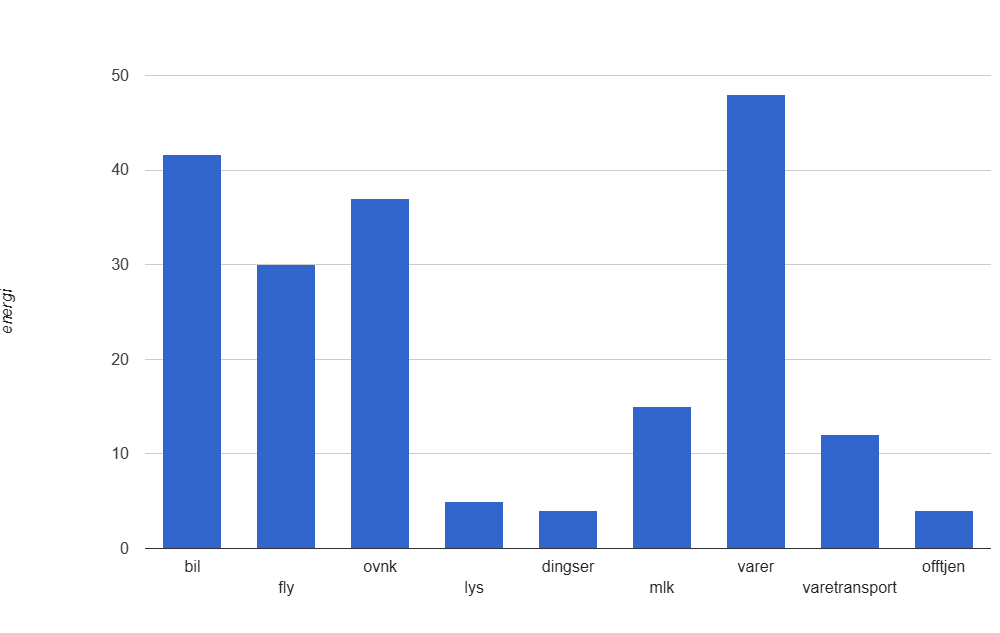

-Isak GalleBerg
-Universitetet i Agder
-IT & informasjonssytemer
Hei! Jeg heter Isak. Jeg er 24 år gammel og studerer IT på UiA.
På fritiden liker jeg å høre på musikk :)
jeg kjører ikke bil og reiser heller ikke stort for øyeblikket, så er nok mat og oppvarming som bidrar mest på mitt klimaavtrykk.
Bar-chart hentet fra ProgOblig2 etter ønsket fra oppgaven og har ikke noe samnheng med vår egen drøfting.